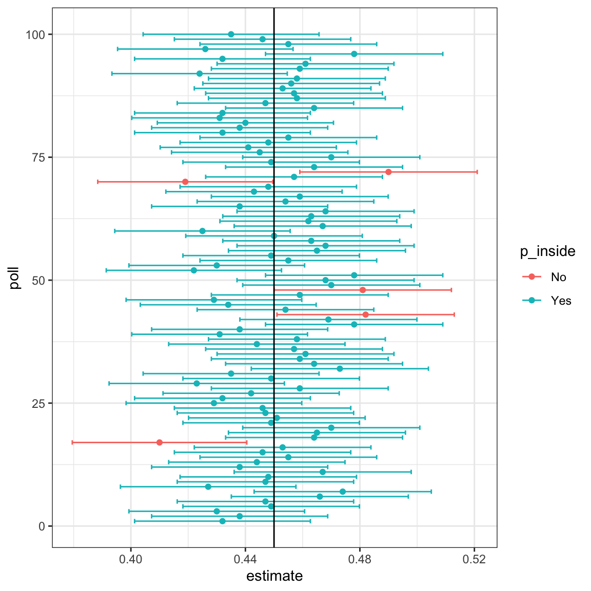

8 Confidence intervals
Confidence intervals are a very useful concept widely employed by data analysts.
In the competition described in Section 6.1, you were asked to give an interval. If the interval you submitted includes the \(p\), you receive half the money you spent on your poll back and proceed to the next stage of the competition. One way to pass to the second round is to report a very large interval. For example, the interval \([0,1]\) is guaranteed to include \(p\). However, with an interval this big, we have no chance of winning the competition. Similarly, if you are an election forecaster and predict the spread will be between -100% and 100%, you will be ridiculed for stating the obvious. Even a smaller interval, such as saying the spread will be between -10 and 10%, will not be considered serious.
On the other hand, the smaller the interval we report, the smaller our chances are of winning the prize. Likewise, a bold pollster that reports very small intervals and misses the mark most of the time will not be considered a good pollster. We want to be somewhere in between.
We can use the statistical theory we have learned to compute the probability of any given interval including \(p\). If we are asked to create an interval with, say, a 95% chance of including \(p\), we can do that as well; these are called 95% confidence intervals.
When a pollster reports an estimate and a margin of error, they are, indirectly, reporting a 95% confidence interval. Let’s now see how this works mathematically.
8.1 Constructing confidence intervals
In Section 7.1, we used the Central Limit Theorem (CLT) to derive the margin of error and showed that the interval
\([\bar{X} - 1.96\,\hat{\mathrm{SE}}(\bar{X}), \bar{X} + 1.96\,\hat{\mathrm{SE}}(\bar{X})]\)
has a 95% probability of containing the true proportion \(p\). This type of interval is known as a 95% confidence interval. We now take a closer look at what this statement really means.
It is important to remember that the endpoints of this interval are not fixed numbers, they are random variables that depend on the sample we happen to draw. Each time we collect a new sample, we obtain a different \(\bar{X}\) and therefore a different interval. To illustrate this, we can repeat our sampling process many times using the same parameters as in an earlier Monte Carlo simulation:
and notice it the intreval different if we run it again:
Keep sampling and creating intervals, and you will see the random variation.
To determine the probability that the interval includes \(p\), we need to compute the following:
\[ \mathrm{Pr}\left(\bar{X} - 1.96\,\hat{\mathrm{SE}}(\bar{X}) \leq p \leq \bar{X} + 1.96\,\hat{\mathrm{SE}}(\bar{X})\right) \]
By subtracting and dividing the same quantities in all parts of the equation, we find that the above is equivalent to:
\[ \mathrm{Pr}\left(-1.96 \leq \frac{\bar{X}- p}{\hat{\mathrm{SE}}(\bar{X})} \leq 1.96\right) \]
The term in the middle is an approximately normal random variable with expected value 0 and standard error 1, which we have been denoting with \(Z\), so we have:
\[ \mathrm{Pr}\left(-1.96 \leq Z \leq 1.96\right) \]
which we can quickly compute using :
proving that we have a 95% probability.
If we want to have a larger probability, say 99%, we need to multiply by whatever z satisfies the following:
\[ \mathrm{Pr}\left(-z \leq Z \leq z\right) = 0.99 \]
Using:
z <- qnorm(0.995)
z
#> [1] 2.58will achieve this because by definition pnorm(qnorm(0.995)) is 0.995, and by symmetry pnorm(1-qnorm(0.995)) is 1 - 0.995. As a consequence, we have that:
is 0.995 - 0.005 = 0.99.
We can use this approach for any probability, not just 0.95 and 0.99. In statistics textbooks, confidence interval formulas are given for arbitrary probabilities written as \(1-\alpha\). We can obtain the \(z\) for the equation above using z = qnorm(1 - alpha / 2) because \(1 - \alpha/2 - \alpha/2 = 1 - \alpha\). So, for example, for \(\alpha=0.05\), \(1 - \alpha/2 = 0.975\) and we get the \(z=1.96\) we used above:
qnorm(0.975)
#> [1] 1.968.2 A Monte Carlo simulation
We can run a Monte Carlo simulation to confirm that, in fact, a 95% confidence interval includes \(p\) 95% of the time.
The following plot shows the first 100 confidence intervals. In this case, we created the simulation so the black line denotes the parameter we are trying to estimate:

When applying the theory we described above, it’s important to remember that it’s the intervals that are random, not \(p\). In the plot above, we can see the random intervals moving around, while the proportion of blue beads in the urn \(p\), represented with the vertical line, remains in the same place. So the 95% relates to the probability that the random interval falls on top of \(p\). Interpreting a confidence interval as “\(p\) has a 95% chance of being between this or that” is technically incorrect because \(p\) is a fixed value, not a random variable.
8.3 Exercises
For these exercises, we will use actual polls from the 2016 election. You can load the data from the dslabs package.
library(dslabs)Specifically, we will use all the national polls that ended within one week prior to the election.
1. For the first poll, you can obtain the samples size and estimated Clinton percentage with:
N <- polls$samplesize[1]
x_hat <- polls$rawpoll_clinton[1]/100Assume there are only two candidates and construct a 95% confidence interval for the election night proportion \(p\).
2. Now use dplyr to add a confidence interval as two columns, call them lower and upper, to the object polls. Then, use select to show the pollster, enddate, x_hat,lower, upper variables. Hint: Define temporary columns x_hat and se_hat.
3. The final tally for the popular vote was Clinton 48.2% and Trump 46.1%. Add a column, call it hit, to the previous table stating if the confidence interval included the true proportion \(p=0.482\) or not.
4. For the table you just created, what proportion of confidence intervals included \(p\)?
5. If these confidence intervals are constructed correctly, and the theory holds up, what proportion should include \(p\)?
6. A much smaller proportion of the polls than expected produce confidence intervals containing \(p\). If you look closely at the table, you will see that most polls that fail to include \(p\) are underestimating. The reason for this is undecided voters, individuals polled that do not yet know who they will vote for or do not want to say. Because, historically, undecideds divide evenly between the two main candidates on election day, it is more informative to estimate the spread or the difference between the proportion of two candidates, \(\mu\), which in this election was \(0. 482 - 0.461 = 0.021\). Assume that there are only two parties and that \(\theta = 2p - 1\). Redefine polls as below and re-do exercise 2, but for the difference.
7. Now repeat exercise 3, but for the difference.
8. Now repeat exercise 4, but for the difference.
9. Although the proportion of confidence intervals increases substantially, it is still lower than 0.95. In the next chapter, we learn the reason for this. To motivate this, make a plot of the error, the difference between each poll’s estimate and the actual \(\theta=0.021\). Stratify by pollster.
10. Redo the plot that you made for exercise 9, but only for pollsters that took five or more polls.